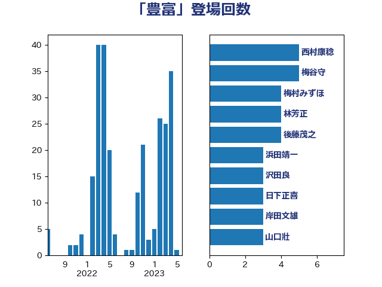

単語「豊富」

| 岸信夫 | 自由民主党 | 6 回 |
| 梶山弘志 | 自由民主党 | 5 回 |
| 後藤茂之 | 自由民主党 | 4 回 |
| 萩生田光一 | 自由民主党 | 4 回 |
| 鬼木誠 | 立憲民主党 | 4 回 |
| 山口壯 | 自由民主党 | 3 回 |
| 杉田水脈 | 自由民主党 | 3 回 |
| 梅村みずほ | 日本維新の会 | 3 回 |
| 田村貴昭 | 日本共産党 | 3 回 |
| 上田英俊 | 自由民主党 | 2 回 |
| 加藤竜祥 | 自由民主党 | 2 回 |
| 城井崇 | 立憲民主党 | 2 回 |
| 塩川鉄也 | 日本共産党 | 2 回 |
| 室井邦彦 | 日本維新の会 | 2 回 |
| 小泉進次郎 | 自由民主党 | 2 回 |
| 小野泰輔 | 日本維新の会 | 2 回 |
| 小野田紀美 | 自由民主党 | 2 回 |
| 末松信介 | 自由民主党 | 2 回 |
| 源馬謙太郎 | 立憲民主党 | 2 回 |
| 甘利明 | 自由民主党 | 2 回 |
| 緑川貴士 | 立憲民主党 | 2 回 |
| 舩後靖彦 | れいわ新選組 | 2 回 |
| 菅義偉 | 自由民主党 | 2 回 |
| 西村康稔 | 自由民主党 | 2 回 |
| 足立康史 | 日本維新の会 | 2 回 |
| 進藤金日子 | 自由民主党 | 2 回 |
| 野上浩太郎 | 自由民主党 | 2 回 |
| こやり隆史 | 自由民主党 | 1 回 |
| ながえ孝子 | 無所属 | 1 回 |
| 三浦信祐 | 公明党 | 1 回 |
| 上田清司 | 国民民主党 | 1 回 |
| 中川貴元 | 自由民主党 | 1 回 |
| 中川郁子 | 自由民主党 | 1 回 |
| 井上信治 | 自由民主党 | 1 回 |
| 井上哲士 | 日本共産党 | 1 回 |
| 井上英孝 | 日本維新の会 | 1 回 |
| 井上貴博 | 自由民主党 | 1 回 |
| 仁木博文 | 無所属 | 1 回 |
| 今井絵理子 | 自由民主党 | 1 回 |
| 伊藤孝江 | 公明党 | 1 回 |
| 佐藤英道 | 公明党 | 1 回 |
| 佐藤茂樹 | 公明党 | 1 回 |
| 倉林明子 | 日本共産党 | 1 回 |
| 北村経夫 | 自由民主党 | 1 回 |
| 古賀之士 | 立憲民主党 | 1 回 |
| 吉田はるみ | 立憲民主党 | 1 回 |
| 吉田宣弘 | 公明党 | 1 回 |
| 吉田統彦 | 立憲民主党 | 1 回 |
| 塩崎彰久 | 自由民主党 | 1 回 |
| 大串正樹 | 自由民主党 | 1 回 |
| 太栄志 | 立憲民主党 | 1 回 |
| 宮崎雅夫 | 自由民主党 | 1 回 |
| 宮本周司 | 自由民主党 | 1 回 |
| 小宮山泰子 | 立憲民主党 | 1 回 |
| 小川淳也 | 立憲民主党 | 1 回 |
| 尾身朝子 | 自由民主党 | 1 回 |
| 山下貴司 | 自由民主党 | 1 回 |
| 山口俊一 | 自由民主党 | 1 回 |
| 山崎正昭 | 自由民主党 | 1 回 |
| 山本剛正 | 日本維新の会 | 1 回 |
| 山添拓 | 日本共産党 | 1 回 |
| 山田賢司 | 自由民主党 | 1 回 |
| 岡本三成 | 公明党 | 1 回 |
| 岸田文雄 | 自由民主党 | 1 回 |
| 島村大 | 自由民主党 | 1 回 |
| 平井卓也 | 自由民主党 | 1 回 |
| 平木大作 | 公明党 | 1 回 |
| 後藤祐一 | 立憲民主党 | 1 回 |
| 打越さく良 | 立憲民主党 | 1 回 |
| 新藤義孝 | 自由民主党 | 1 回 |
| 早坂敦 | 日本維新の会 | 1 回 |
| 杉久武 | 公明党 | 1 回 |
| 東徹 | 日本維新の会 | 1 回 |
| 松木けんこう | 立憲民主党 | 1 回 |
| 林芳正 | 自由民主党 | 1 回 |
| 梅村聡 | 日本維新の会 | 1 回 |
| 梅谷守 | 立憲民主党 | 1 回 |
| 森山浩行 | 立憲民主党 | 1 回 |
| 横山信一 | 公明党 | 1 回 |
| 橋本聖子 | 無所属 | 1 回 |
| 武田良太 | 自由民主党 | 1 回 |
| 河西宏一 | 公明党 | 1 回 |
| 浅野哲 | 国民民主党 | 1 回 |
| 浦野靖人 | 日本維新の会 | 1 回 |
| 浮島智子 | 公明党 | 1 回 |
| 湯原俊二 | 立憲民主党 | 1 回 |
| 滝沢求 | 自由民主党 | 1 回 |
| 漆間譲司 | 日本維新の会 | 1 回 |
| 熊谷裕人 | 立憲民主党 | 1 回 |
| 片山大介 | 日本維新の会 | 1 回 |
| 田嶋要 | 立憲民主党 | 1 回 |
| 田畑裕明 | 自由民主党 | 1 回 |
| 石川昭政 | 自由民主党 | 1 回 |
| 神田憲次 | 自由民主党 | 1 回 |
| 稲富修二 | 立憲民主党 | 1 回 |
| 竹内真二 | 公明党 | 1 回 |
| 笠井亮 | 日本共産党 | 1 回 |
| 簗和生 | 自由民主党 | 1 回 |
| 舞立昇治 | 自由民主党 | 1 回 |
| 若宮健嗣 | 自由民主党 | 1 回 |
| 茂木敏充 | 自由民主党 | 1 回 |
| 藤巻健太 | 日本維新の会 | 1 回 |
| 赤嶺政賢 | 日本共産党 | 1 回 |
| 金田勝年 | 自由民主党 | 1 回 |
| 鈴木憲和 | 自由民主党 | 1 回 |
| 鈴木義弘 | 国民民主党 | 1 回 |
| 鈴木英敬 | 自由民主党 | 1 回 |
| 青山繁晴 | 自由民主党 | 1 回 |
| 青木一彦 | 自由民主党 | 1 回 |
| 青木愛 | 立憲民主党 | 1 回 |
| 高橋はるみ | 自由民主党 | 1 回 |
| 高橋千鶴子 | 日本共産党 | 1 回 |
| 高良鉄美 | 無所属 | 1 回 |
| 高野光二郎 | 自由民主党 | 1 回 |
| 鰐淵洋子 | 公明党 | 1 回 |